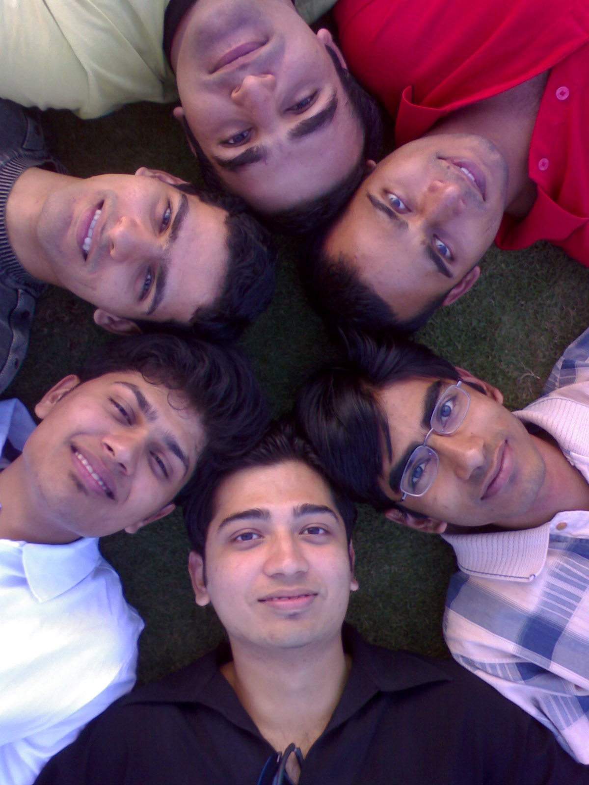
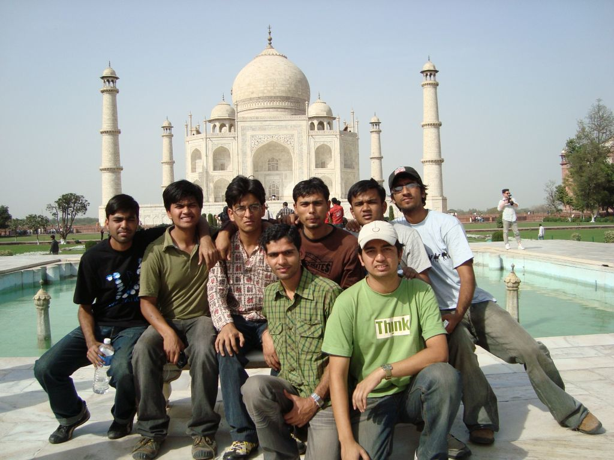

The Yearbook - Commemorating 2005-09!
Sambhav Jain's profile information
Name - Sambhav JainBirthday - 4th May
Email - samgog@gmail.com
Address - 44,Industrial Estate, Nunhai, Agra 282006
Phone - (0562) 2280922
Webpage - Link
Hobbies - music,BC,designing,playing cards-TT-BB-VB-CS
WishList - world tour with friends !!
Memorabilia - Summer 07
What would you want to be remembered as - GenX
Future Plans - Masters
Testimonials written by Sambhav Jain
Sambhav Jain's Album

{kind=link}
Yaari - Forever

{kind=link}
Gonna Shine Forever !!!

poora Gang !!!
Testimonials
Manish Sharma wrote-Some people apparently have boundless, illimitable energy - they are on the go from morning to night and often far into the night, working hard, never tiring, never worn out or exhausted - and getting twice as much done as any three other human beings.

One such people in our batch is SAMBHAV JAIN
 aka tinka(I still don't know why do people call him with this name).In addition to being excellent at studies
aka tinka(I still don't know why do people call him with this name).In addition to being excellent at studies , he took responsibilities of many events, may be cultural or related to academics. Kudos to him for managing all that!!
, he took responsibilities of many events, may be cultural or related to academics. Kudos to him for managing all that!!
He is a good designer too and has worked for designing many t-shirts.

Wish him a great future ahead.
Stay in touch.
CHEERS!!
Abhinav Parashar wrote-
Sambhu jain.... aka tinka
He is really a fun loving guy. Academics me to fodu hai he ... sath me
cultural me bhi active rehta hai. Starting me lagta tha ki ye bahut padhta hoga ...
lekin bad me jab or touch me aaya to ... to I found ki bahut Bada BCbaaz hai
 .
.
He is not a pro of in singing and dancing ... but manages well to stand on stage
. I think I was the only one present from our group to see his first performance during our Freshers.
Also good in Acting. I do remember his Bhool-bhulaiya wali ... and chand ke sath chor wali performance
.
He is quite creative .... hv designed so many posters. He is caring, responsible and dedicated person.
Bhai tune placements me bahut help ki hai.
or GAG ko bhi jhela .
He has a very calm nature ...never saw him losing his temper.
Bhai time kam bacha hai ... its the last hour og yearbook. So testi khtm yahi khtm karni padegi.
Testi ke size pe mat jana
 .
.
May god bless u. Wish u a bright future. Touch me rahio.
Bharat Ram Ambati wrote-
Hi ra...
Neeku cheppinatlu gane telugulo testi rasthunna pandaga chesuko...
 . Winterschool tho parichayam ayyam iddaram. Thanks to TCS guys for conducting it . Iddariki oke project. adhe ippati varaku ala continue chesukuntu vasthunnam. Enni projects chesina entha mandhi project partners vachina veedu the best... Adento gani maa iddariki bale set aipoyedi. Iddaram equalga work share chesukune vallam. eppudu okariki work ekkuva inkolaku takkuva ayindi anna gola ledu... Studiese kadu extra-curcular kooda kummesthadu. cultural, sports, BC with frens, parties ekkada taggadu asalu... aina kooda 9 pointer and prati eventlonu prize techesthadu... daniki .
. Winterschool tho parichayam ayyam iddaram. Thanks to TCS guys for conducting it . Iddariki oke project. adhe ippati varaku ala continue chesukuntu vasthunnam. Enni projects chesina entha mandhi project partners vachina veedu the best... Adento gani maa iddariki bale set aipoyedi. Iddaram equalga work share chesukune vallam. eppudu okariki work ekkuva inkolaku takkuva ayindi anna gola ledu... Studiese kadu extra-curcular kooda kummesthadu. cultural, sports, BC with frens, parties ekkada taggadu asalu... aina kooda 9 pointer and prati eventlonu prize techesthadu... daniki .
cool guy. Good fren. All the best 4 ur future. u r one of the guys whom i miss a lot after B.Tech. keep in touch.
Srirang Ranjalkar wrote-
wanted to write a testimonial to u in 2 parts, but becoz of the time constraint, all I can do is
. You are one of the most coooooooooooooooooooooooooooooooooooooolest guys I've ever ever ever seen in my life. And the way you handle things is Awesome
Ranga.
Siva Reddy wrote-
let me write about the coolest and sweetest guys I have ever seen. Let me write my impressions year wise.
1st year - a good junior to seniors
2nd year- a very active guy with many talents
3rd year- this is the year I came to know about him a lot. Initially I used to think, how can a man be so cool. He always had a smiling and glowing face. I was always amazed by it. How, How.
 I used to give it a lot of thought. and then we started talking.
I used to give it a lot of thought. and then we started talking.
Thats when I understood him. its his nature to be like that and thinking about it is useless
 . Then we slowly became friends. He used to tell me many things. I was amazed by his talent, skills and many things. He is the guy who manages everything. He enjoys a lot. Sangal loves him. and we all love him
. Then we slowly became friends. He used to tell me many things. I was amazed by his talent, skills and many things. He is the guy who manages everything. He enjoys a lot. Sangal loves him. and we all love him
4th year- we became more close. He used to go to many places and I used to see his pics and enjoy thinking I wish I would be at that place. Even then he manages everything. He is a lover boy. Girls are crazy about him. Do you remember the intern who used to work under me. She used to ask about you always
. I will give her contact number if you are interested.
And the main thing is we are missing one of the coolest guys in LTRC. His knowlege on any subject is vast
. I take many ideas from him whenever I am out of my ideas. Miss you buddy.
Hope I come to your company or you come to the place where I am working or studying. Its really nice to work with you.
Miss you

Prashasti Gupta wrote-
Sambhav was among the first few friends I made in IIIT. He is good at almost everything be it singing,acads, organizing an event, sports, shopping,cooking or chatting...
I have had some of the most memorable trips of my btech with him . The list is :
1. My first trip ever to lumbini park and NTR gardens...that was one hell of a trip ...
2. Awesome trip to Ramoji..
3. Diwali lunch at his Di's house
4. Maggie party at his Di's house..
5. Juniors hyderabad bhramand
...
He is an awesome being ..you will never find him nervous or angry...he is always calm and composed...he is fun loving...ghumne ka bhaut shauk hai
...shopping bhi awesome karata hai ..gappe marne mein to bade maze aate hai iske saath...I used to tell him -"teri wife badi lucky hogi " in first year...
Its fun to organize events with him...he has good knowledge of stuff...
..we organized hyderabad trip for juniors ...and with irritating Vinayak sir on our head...he was the only one who was calm......
He has done so much in so many ways for institute and our batch ...
As a placement coordinator he has also done a gr8 job...even when he was not the one with a PPO..
All the Best yaar
Keep in touch
Manish Arora wrote-
Sambhav aka Tinka aka GenX
What an allrounder he is !! Har kaam karta hai banda aur bilkul achche tarike se karta hai. This guy is very intelligent, sharp and versatile. Har jagah ye tinka udta hua mil jayega. He is very good at acads and has maintained a good CGPA throughout his engg. Isne mujhe graphics padhaya tha and he was damn good at that. Thanks a lot for that buddy. He is a very good singer. Tinke bhai ke saath kai baar inter-house singing mein part liya hai and we have won points as well. This guy is very creative. Hamare batch ki design team ka bhi part hai. He is a good organizer as well. The way he worked for Felicity deserves accolades. Har jagah BC mein shaamil rehta hai fir chahe vo CS mein ho ya volleyball mein ho ya fir kahin par bhi. Acting bhi awesome karta hai. You should see him doing that Matrix one. He is a fun loving guy who always wanna enjoy every bit of his life and remains happy. Be the same as you are tinke. May God give you whatever you aspire for in your life. Cheers to our friendship. God bless !!
Cheers
Novirus
Randeep Singh Banga wrote-
bhai kamaal ka banda hai...is active in everything around him...studies...R&D...conferences...felicity...batch trip...sunday Carnival...cultural...and what not
he's a genius in studies...thr aren't many who publish 2 papers in the BTech...equally innovative when it comes to drama...antakshari ka bond...fully committed when it comes to work for placements of d batch...he is out of d people who deserve to get placed in 1st 3 days...luck smhow betrayed him...still he never looked worried, rather continued working 4 placements of others wid a smiling face...during those testing times, he was an inspiration figure for d batch. dude hats off to dis nature of urs
always ready for BC and to party
...cellar mein bahut bahut BC ki hai isne...aur Obh ke kisse alag hain....does a lot of work but still always available for friends ...always ready to help...teaches very well at exam time...exam time pe iska ek hi funda hai...jo padh raha ho uske saath baith jao ...aur bahut hi successful funda hi bhai log...
GAG likes him a lot and greets him as his son
 ...arre bhai don't ever believe him for directions to some place
...arre bhai don't ever believe him for directions to some place  ...bahut ghumaega...
...bahut ghumaega...
never takes d credit himself...he's a person who'l work at d background...u'l realize his contribution whn u subtract his work and imagine how things would hv been w/o him...
he's a gr8 person to b had as a friend...u rock dude...STAY IN TOUCH ALWAYS...wish u all d best in life....
Vipul Mittal wrote-
Sambhav bhai ke baare mein itna kuch hai bolne ke liye lekin bas words nahin mil rahe. For our batch he is like a cherry on the cake. He is the most versatile character I have seen. Be it acads, cultural, managemnet or organization, he has excelled himself in every field. For the faculty, he is among their most favourite students and he must be at the top in Sangal Sir's list
. He has been my neighbour for the first two years in cellar and we always used to talk whenever time permitted. He taught us Graphics and whatever marks I got, its all because of him. Thanx a lot for that
Culturally he is just brilliant. When it comes to knowledge about hindi songs, no one can beat him. He has won many of the Antakshari events held here and organised many. A damn good singer and very hard working. Holds wonderful repo among the seniors and juniors. Within the batch itself, he holds a very special place.
I have done some courses with him and he just knows what to do to keep the faculty impressed
. He possesses very nice presentation skills and always finds a way to keep everyone engaged. A fun loving guy who is always there to make you smile. Very friendly and a cool gentleman. How can one forget the hard work he has put up for the placements though he was not placed initially. Knows how to talk to people and easily mingles with whatever group he is in.
I still wonders how did he screw his GRE because he worked very hard for that and I still believe that he'll make it big soon. I hope for the same
Its been a nice journey with you mate and I can never forget you. Good luck for your future. Giod bless you.
Ankush Kalkote wrote-
Mr GEN is a real GEM of our batch...Smart, intelligent, friendly, helpful and fun-loving
...He has an artistic mind... Makes nice posters, designs for anything we require... We always go to him first if we have to do anything with Photoshop...
He has major participation in the cultural events from Aakash house... He is a good singer and good at dramatics....He has successfully organized many events...Also played a major role in organizing Felicity'08
He is sincere about his research work and good at studies...One of few guyz class who have class participation...He is nine-pointer....Pehle mujhe yakin hi nahi hua, kyunki bahot kam padhta hai...Phir bhi grades mast laata hai
His selfless dedication for the placement comittee is really admirable
....Hats off to u for all the efforts you have put for the placements ...He has really worked hard for almost three-four months...We all are lucky to have you in the placement committee
Popularly known as tinka, kyunki iska kabhi pata nahi rehta ki kab ud jayega..Kahi ladki dikhte hi Tinka gayab ho jaata hai
...Hamesha ye ache se tayar wayar hoke rehte hai, ladkiyon impression maarne ke liye . Lekin ek baat to sach hai, Iski image hamare group me sabse achchi hogi ladkiyon mein
yaar lekin ab Chennai ja raha hai
 ...Will miss you a lot... Hope you get admission to one of the best US universities for MS.... Have a great career in research .
...Will miss you a lot... Hope you get admission to one of the best US universities for MS.... Have a great career in research .
Song 4 u: Tinka Tinka...
Will miss u 4: Your friendly and helpful nature
Alok Kumar Gautam wrote-
I always wanted to smthing for college..and my batch mates..but never took any initiative.. aur yeh mujhe hamesha is baat pe sunata rahta tha...
phir finally when i got placed.. i gave a helping hand to the placement committee once he asked me to do so..and i really feel good after doing smthing for our batch and the credit goes to you man
..one of the guys who are
really helpful and never say No.. iski sabse badi problem yahi hai ki yeh kisi ko kabhi Na nahin kahta
..aur iska kabhi kabhi kat bhi jata hai is chakkar mein ... jo bhi hai banda bindaas hai...aur mast rahta hai ...kabhi tension mein nahin dekha maine ise...is pretty cool.. you just rock man..keep rocking and stay in touch
Will Miss You For your nice suggestions
Mess For You kabhi kabhi 'Na' kah dena bhi sehat ke liye faydemand hota hai
Alok Kumar Gautam wrote-
He is a TRUE GENTLEMAN. A guy with whom you will always feel comfortable. Well.....he is intelligent, efficient, cool, dedicated and focussed. In the first sem, we wr wingmates but we dint have good interaction till 4th sem. I was kinda chup chap types that time. ab mein is bande ke bare mein kya hi likhoon...chhota munh aur badi baat..banda heera hai heera.... banda itna seedha saadha hai ki mat poocho.. haan... iske bahut jyada friends hai...bahut bahut jyada.. .and is very very very friendly. aur is wajah se hi inka naam tinka bhi pad gaya...yeh kahin bhi tike nahin rahte.. abhi hamare saath hain...koi aur dikh gaya to uske saath ho liya..ab inki bhi galti nahin hai...dosti hi itni jyada kar li inhone ki kya kiya jaye...bhai sahab ne 6th sem ke baad..summers mein itna kaam kiya tha NLP mein ki poocho mat...utna kaam shayad hi kisi ne
kiya ho us summers mein...placement committe ka mahatvapurna ang hai yeh..gane bhi bahut acche gata hai...kavitayen bhi likhta hai ...woh bhi pretty good...though yeh koi bhi sport bahut acche tareeke se nahin khleta but saron mein haath pair ajmata rahta hai ... jack of all trades..as far as sports is concerned... one of the few all rounders of our batch... i always wonder ki how come he has got such a nice CGPA ..jabki yeh jyada padhta likhta nahin hai...and v used to call him farzi 9 pointer...
..haan ek baat hai..one of the few guys who remain attentive in all classes and i think dats the
key to his awesome CGPA..kyun bhai yehi baat hai na..ya koi aur hi chakkar hai
... bande ne IIIT mein koi bhi kaam nahin chhoda hai... participated in singing events.. participated and conducted antakshari..dance performance bhi de chuka hai... yearly sports mein bhi participate karta hai...matlab banda har jagah maujood rahta hai... and thats really awesome man. ..apne Aakash house ka cultural secretary tha... yehi post thi na teri ya kucch aur thi.. ...Sunil Soni wrote-
Sambhav - pehli baar isse mila tha cellar mein .... hum logo thodi bahut cards khelte the ... ye banda ethics n morals ka bahut strong hain ... mera hi partner tha kisi game mein aur maine thode tips diye cheating ke to bolta hain - "soni, ye galat baat hain" ... ufff !!! cards hi to hain ... cheating karke jitne mein maja bahut aata hain ... try karna kabhi
this guy is really cooool ...
bahut sari events organize bhi karta hain aur participate bhi karta hain ..... kafi accha gata bhi hain .....
the best thing is about this guy is - he is very enthusiastic ....
be it anything .... takes things as his passion ..... be it assignments or exams or singing or organising .....
i remember d hard work he did during our placements .... din pura organizing mein bita tha rather than preparing for placements bcoz there were very few volunteers then ....
this shows d care he has for his friends n batch mates ..... keep it up dude ...
ye banda cheezo ko bahut jaldi apna leta hain .... bahut shaant aur sidha hain ....
maine aaj tak isko kabhi gusse mein nahi dekha nahi kabhi faltoo baat karte hue dekha hain ...
ye bahut helping nature hain ... bahut jyada heen helping nature hain .... isko A for kya hota hain pucho .. ye pura A for to Z for bata dega ....
i had this experience jab maine isko gujarat trip ke baare mein pucha tha .. this guy took care of minute details as well ... very minute .... u rock buddy ....
aur this guy has got awesome cgpa - 9 pointer !!!
keep it up dude ... n always b d way u r ... koi change ki jarurat nahi hain
keep rocking
Atul Dwivedi wrote-
Sambhav ...akka Tinka ... Ye banda all rounder hai .. mera bahut bada competitor hai
....
Tinka ...bhai .. smart hai , handsome hai , baal hai , ladkiya feeda hai, friendly nature hai, bc mast marta hai .... aur aage kya hi bolun ..banda down to earth hai ..
A decent singer ... I remember those performances which we did together during Dr. Kalam visited IIIT-H..
A cultural organizer ... he has organized many events ... mere sath kai saare events organize karaye hai .....
Placement coordinator...he has done great work .. u r rocking bhai... itna kaam .. wo bhi doosro ke liye...that's shows passion you have about your works... !!
Very hard working and dedicated ... !!
Badai to sabhi karte hai ... ab bata dun ki ... Logo ke maje lene mein thoda weak hai .. mere sath raho dude ..sudhar jayega..
.... tinka thoda nervous ho jata hai .. jab log maje lena start kar dete hai ... lekin apni smile deta rahta hai...lekin ab sudhar gaya hai .. ab isko tension nahi hoti .. ab aadat ho gayi hai:
By jove .. padhai mein bhi banda bond hai .. cgpa to bhai ..awesome hai ... very hard working ... studies mein bond hai ...... fodu
ab tinke bhai .. jyada mai bolunga nahi kyun ki tum hai ud jaogi .. mai chahta hun ki tum jameen par hi raho .. aur mere dost bane raho ... aajkal mere maje bahut le rahe ho dude .... mai form mein aaunga to .. samajh rahe ho na ...
.. kidding buddy ..
Accha ab baat ye hai ki ... Banda thoda seedhe kisam ka hai ... dil ka bilkul saaf hai ... very friendly and talktive in nature ... cool dude type ka banda hai ... !!
Ab hai ye ki jain sahab ... mujhe aa rahi hai neend .. to mai aapki qualities add karunga baad mein ...
Accha haan ek baat aur .. Ye banda Chennai jaa raha hai ... raam raam kya hoga bhai tera waha...
..
Bande ki smile par bandiya feeda hai ... Ganja tak feeda ho gaya hai .. ab kya chahiye ..agal bagal rahte hi ho ..
Likhta rahunga bhai ...
Deepak Vig wrote-
Mr. jain... the most talented person in IIIT i hv ever met. I am a big fan of his creativity .. don't know how he can think that way
. Aur iski effciency ke kya kehne .. sab se kam pad kar sabse acha grade kese lana hai ... he knows the best way .
I know him from Bansal Classes, Kota and from thr our friendship started. We always use to sit in the front row and from thr on the bond between us always strengthened
. He is a very cool guy and is full of enthusiasm ... always ready to participate or manage an event. He is a very good singer (always ready with a song and it will surely match the situation ) and a very good poet.
Koi aisi domain nahi hai jismein isne haath na daala ho and he is always perfect in that
. He worked really hard when he was the head of the Cultural team of Aakash house . He is good in many games like cricket(with Paul Adams action ), Volleyball and football and it is the perfect place to see his enthusiasm . He is the member of the placement committee and I think he has spend more time with Mr. Javadev as compared to any other person in the committee. He narrates the stories that he come across in meeting, in the best way .
He did a lot of hard work in Felicity '08 and he was the one who decorated the whole campus and made it look really beautiful
.
He accompanied us on Sikkim trip and Vaishno Devi Trip and it was a gr8 pleasure to have him on the trip. He is a gr8 entertainer
. That were the unforgetable moments of my life.
He got another name 'Tinka' as he can't stay at his place for a longer time. Thodi der mein udd leta hai ... and no one ever have a hint abt where he has gone or when he has gone
 . He is always able to maintain a good image in everyone's mind and heart . Don't know how he is able to do that .
. He is always able to maintain a good image in everyone's mind and heart . Don't know how he is able to do that .
Everyone feels very comfortable in his company
. The most unforgetable incident was the one happened in NTR whr he tried to propose a chinki .
Best of Luck for your future ... will miss u .. always keep in touch
Kapil Bajaj wrote-
Forgot to thank u for the delicious food in ur house
Thank u
Kapil Bajaj wrote-
Sambhav ( aka Tinka, Thinka, Sam, Mr. Jain
) is one of the most hard working guys in IIIT... Right from first year I have seen working as an organizer in almost every event in IIIT ( I know because I am never involved in such things and notice all the others working )... Extremely dedicated to wat he does be it academics or events management ... he is always trying to give his 110 %... even in this semester wen everybody else can be seen doing BC all the time... he remains in the lab all the time .... He is a gud singer too ( and also likes to sing a lot, just ask him and he will sing for u ).... back bone of Aakash house cultural team... He was also the lead of our placement committee and cud be seen running here and there ( on the call of Mr. Jaydev ).... but jokes apart he did a lot of work of there even wen he was unplaced... Even at that tremendous pressure he was so cool that shows his ability to handle such high pressure situations ..... He is gud in sports too... I have seen him playing cricket, BB and volleyball and in all these games he plays with such enthusiasm... that it is pure joy to watch him play ( sometimes he creates some funny situations too specially in VB... ).... yeh kuchh chand logo maine se hai jiski taang bahut khichi jaati hai but he always has smile on his face and is very sporty .... Iske wajah se "sambhav wali" ke bhi kai baar maaze liye hai
I think u are perfect in every sense of the word... but I think u try too hard sometimes ( just me observation )...
Wish u best of luck in future
Keep Rocking
Sanket Sharma wrote-
I don't deny one claiming other to be the all rounder. I respect their views too. But this personality is the captain of all rounders. 9 pointer, researcher, smart, gamer (bhale taash hi sahi
), sketching, actor, sporty, adventurist, good speaker etc. There is hardly any domain where he lacks.
I still clearly remember introducing himself to Sangal Sir in workspace on the first day of iiit.
It was only sambhav whom i can recollect among the 50 stood there. It is quite evident from this incident that Sambhav makes his presence wherever he stands.
His contribution in felicity was worth appreciating. He has been active in all possible college affairs. he is polite, honest, trustworthy and sometimes diplomatic which is essential at times.
He joined us for the Sikkim Trip and made it a memorable one. He has a good understanding and deals every individual in different style so as the individual feels comfortable.
Hume kahin bhul mat jana is checktronix ki nayi duniya mai.. Hope you grow within the company.
Pankaj Saini wrote-
remember you for for all the masti we had.. be it outings..night-outs..bakar..singing.. photoshoots..
wish you luckfor the ladies' department.. though it wud be hard to come by in Chennai
but still all the very best Pankaj Saini wrote-
Mr.Jain aka Tinka has always been an integral part of our gang
..
My earliest memories of him include practicing for group singing in his room in the 2nd semester... and what a practice that was.. for from then on we've participated and won 3-4 singing competitions
..
He has always been involved in all kinds of cultural activities through out the 4 years... and for that reason his room is always full of weird stuff like props, colors, posters, paints, costumes.. and god knows what else.. I remember a photo shoot session where we used some of that material..
Whenever it comes to random bakar.. he's always fun... but when the going gets against him he tends to shrink and take a lil diplomatic stance
He's the one guy who is the most famous among the gals of all batches
.. though for different reasons altogether.. it seems gals find him way too easy going.. and he never lets them down ....
I guess that's the same reason he's not been lucky yet
Amidst all this he's found it easy to maintain a CGPA > 9
.. we've hardly seen him studying in room or library... except for the exam times ... but still .. we began to doubt him so much in this regard that we used to call him 'iski farzi nukki hai'
More recently .. he's been such a help what with all the placements and tight schedules during the same... I don't know when did he find time to prepare for his own placement...
contd...
Rishi Gupta wrote-
There is only a small suggestion from me to you, don't be diplomatic every time, rest you know more.
All the best to you for your future. Jaldi si koi ladki pata le ;p, waise tu chennai jaa raha hai, nahi lagta ki koi chance hain but try karte rehna. And be in touch.
Take Care, Miss u a lot
Rishi Gupta wrote-
Call him Sam or Mr. Jain or Tinka or Sambhav, he deserves a special testimonial. To be honest, he is one of my closest friend whom I consider as the most complete guy around me.
I know him since our JEE coaching, although we were not close friends then, but still I still remember he use to come to classes on a scooter, neatly dressed, tidy, smart looking, extremely sincere, punctual, confident
 . Then we met again during our AIEEE councelling, he was explaining Shikha which college to take or reject , try to bachpan se hi kar raha hai, par abhi tak single hai Ek baar NTR garden mein bhi ek chinki ko propose kar diya tha josh josh mein, but kat gaya
. Then we met again during our AIEEE councelling, he was explaining Shikha which college to take or reject , try to bachpan se hi kar raha hai, par abhi tak single hai Ek baar NTR garden mein bhi ek chinki ko propose kar diya tha josh josh mein, but kat gaya
College mein aane ke baad to ragging ke time saare bansalites jab ek saath chhupte rehte the, tab tinke se dosti hui. I was highly impressed by his nature. He is an all-rounder. Then we spent a lot of time together, enjoying, visiting new places in Hyderabad, Ramoji trip was awesome.
Taash ka silsila bhi tabhi se start ho gaya tha, mast khelta hai tinka. 29 mein to jawaab hi nahi, jo iski side hota hai (un)fortunately hamesha haarta hai
Uske baad jab house events hone lage, he was one of the leading performer, organiser. And every time he comes with something unique and interesting. Hats-off to his creativity
Padhaai mein to bande ka jawaab hi nahi
, dimaag bahut tez chalta hai. Aisa rehta hai, tinka jo course le raha hai, A pakka hai. Padhata bhi mast hai, bahut saare courses pass karaye hain isne.
BC karne raat raat tak laga rehta hai, aur sabse itna close hai ki, kahin bhi kisi bhi topic pe BC karta dikhaai de jaayega. During the second year we played lots of cricket and football together, awesome bowling karta hai, batting bhi theek kar leta hai.
Gaane mein iska jawaab nahi, I still remember he won a prize in singing during our Ramoji trip.
Hats-off dude, again to your allround character.
continued....
Veer Deora wrote-
chalo yaar...sambhav ke liye likh hi deta hoon.
hmm...main bhabhi ki kasam khakar kahta hoon...jo kuch kahoonga sach kahoonga
we are good friends...he used to be very good in 2nd year...but then something changed between us and then i've never been so comfortable around him
(told u..jo kahoonga sach kahoonga) he is still very caring and helpful to me and i respect that more than anything. He is an all-rounder, not because he plays,sings and studies but because he plays all kind of sports, good in every aspect when comes to cultural field and bond of every subject in studies. Don't want to praise him anymore because we all know about it.
I'll always remember him as -- Tinka and for his modesty
Best time spent with him -- Summer 07
Why would he hate me -- bahut li hai tinke ki maine
Message for him -- Good Luck for the time to come. Listen very carefully Tinke - "Even if i don't talk to you in years, you'll still be my good friend as you are now." Shaadi par invite karna mat bhoolna TINKE !!
Have a happy life.
Sorry for this short and straight testimonial but that's me,what can i do.
Sachin wrote-
Sambhav Jain or Genx, I am unable to decide(read deside
) what to write and what not to write in his testimonial. We have spend lots of time together that if I can keep mentioning everything than probably I will keep on writing . Anyway I will try to keep it very short .
Sambhav ,I first met him in A4 English class.Being in the cellar and same english group we often came across however not that close that time. He used to attend all the english classes , works for his essays and homework
(in the first year when you have lots of other tasks as well). Used to finish all the Shalabh sir's assignment at the quickest . He is expert in minimum input and maximum output thing. He is very good in designing.Often makes logo,poster etc. to make things presentable even when the essentials(content etc.) are nothing. His work is always polished and neat(altough his room is total mess )
We bonded mostly in Summer'07. Summer'07 was the time we enjoyed a lot. All of us used to wake up by 5 (pm) , goes to cs, then dinner at Vindu, fir taash ya cricket in BB court, then night out playing CZ, early morning volleyball, then NBH ke saamne baith kar BC and lastly Breakfast at OBH. That was our schedule for month
.It was real fun . No work, no pressure and lots of masti. That time Often takes us to try different restaurants and usually they sucked but fir bhi will miss those days for sure  . Even Summer'08 was fun but summer'07 ki toh baat hi kuch aur thi .After Summer'07 I shifted to rum in his diagonal and he always lands up in my room for BC. Used to wake me up for all the classes . We often watches movies together. We used to cook maggies in night.
. Even Summer'08 was fun but summer'07 ki toh baat hi kuch aur thi .After Summer'07 I shifted to rum in his diagonal and he always lands up in my room for BC. Used to wake me up for all the classes . We often watches movies together. We used to cook maggies in night.
contd..
Sachin wrote-
The Semester break when we went "Sikkim" was really incredible. The hotel-hunt that night in darjelling by us, toy train ke 6 ghante gate mein baithna , har jagah momo khana,diwali night mein car mein dance karna
and all those fantastic places and people like you makes the trip even more memorable . I think its one of the best Diwali I spend in my life. Coming back from trip we organized together Antakshari in felicty'08. He hosting all the event at 3p.m. in sunny day He was also present in post felicity celebration. Maggi that night in kulbir's rum was just awesome .When comes to playing cards. I think he make his partner jinxed . Often becomes my partner in "29", and all I get is 1-2 points in most of the game . Very lucky when comes to teen patti, often reaches Indira nagar and various places .
Was my NLP tutor, used to help me with all my assignments and stuff
.We studied for placements together.The placement studies where we used to pick questions from random sites or sheets and solve them. His recollection of concept is mindblowing . Often remembers ki uss class mein uss prof/tutor ne iss type ka kuch btaya tha and is generally correct(altough kabhie khabar kaat deta hain ). We (me,sam and bansi) used to sit together for hours trying to read for placement but after few question we always starts our BC or some movie etc.. The maggi and heater hunt that day is memorable. Throughout the placement season, though he was not placed his dedication was superb . He helped in conducting interviews of other even though he has to prepare for his placements next day. I feel really embarrassing talking you that time but you were all calm and focused . Was delighted when heard the news .I am sure "checktronix" guys have wished for someone extra special and are extra lucky to have you .
contd....
Sachin wrote-
As for girls I guess "Jab kismet ho ..... toh kya karega pandu" fits best for him. Bechare ne apni poori school life "boys school" mein guzar di. I still wonder how a guy like him has no admirer
. As pointed by Maroo the other day he is really a ladies man. Too soft, handsome, dashing, trendy , expressive and what not. Bit Still not acts frustoo and cries for it. Even when that tragedy with tinki happened , he was calm and all composed . I hope someone special is waiting for you (in chennai ) .
He seems like all nice and fundoo kind of guy but he often becomes manipulative and evil . Diplomatic is the word rightly coined for him
. Always finds a way to come neat and clean from all pangas. Janab ko photo khichane ka vishesh shauk hain, ajeeb-2 pose mein photo hain iski . Has a photogenic personality (aur iski aankhen bhi khuli rehti hain ) .
Wish you all the best for MS and hope Chennai will be not that bad as you think. As you are in Chennai , I am sure you will land in B'lore every weekend (as in you have any other option
).
Will Miss U . Definitely a friend for LIFE
Will Miss U for :- Tours , outings, long chats and most imp. "29"
Most Memorable moment : - MMTS incident , Namchi Incident , Summer'07 and many more
Msg for U: - Be the same you are bestest.
Song for U:- I am the best (ise tu gaa
)
Harsh wrote-
Sambhav or tinka as lot of people call him is one of the most sweet and calm person I have ever come across. He is a person that no one can get angry on. Far from any kind of politics or fights.
A brilliant student and a very creative mind.
A recent event increased my respect for him many folds. He was working day in and out for the placements though he was very tensed for his own placement.
Always ready for a trip. Had loads of fun in the batch trip with all those songs, couldnt speak for 2 days after shouting so much
!!
Didnt know that he can dance well also, saw him dancing in the party where 80 people from our batch went for a treat.
He is one of those person who is too good to be true but believe me he is actually true.
Piyush wrote-
This guy is an all rounder ... studies, management, designing, BC does everything.
I have spent a fair amount of time with him designing for felicity and surely hes one of the best partners I have had while designing something. He can really think out of the box ... its not only designing that matters ... it should be at the right place and time .. and he knows that well.
As far as I have seen he really listen to everybody but speaks only when he needs to ... a nice guy in all.
Buddy I have learnt a lot from those designing sessions ... and enjoyed that time
All the best for your future in chennai
Karan wrote-
I've used this word earlier for him but my old orkut profile got deleted- this guy's a gem! Padhai-likhai, organizing events, college ke affairs, volleyball, ghumna firna, bc.. He's always there. Rather than 'tinka', I'd call him superman! His dedication is exemplary. His mannerisms are brilliant. A perfect gentleman for the ladies. His wife will be one lucky female. He's always ready to help you out.
However, this chap rarely opens up. He talks, he laughs, he listens but he does not really speak his feelings out. He is diplomatic sometimes- but generally to good effect- Its generally an avoid confrontation situation- He's like Jai in Jaane tu ya jaane na. Yes, that sweet!
Lot of memories associated with this chap- Freshers and Carnival, cellar BCs, Graphics. However, my favorite memory with him is undoubtedly on the stage of Felicity '08. As soon as it got over, a lot of us, including me were numb. People came and hugged me. I didn't know how to react. It's when I hugged him that both of us broke down- literally into tears. That moment will remain etched in my memory forever.
Character he represent: Jai in Jaane Tu..
Fav memory: Felicity '08 - just when it got over
Message for you: Be the way you are dude. Don't not change for anything.
For you,